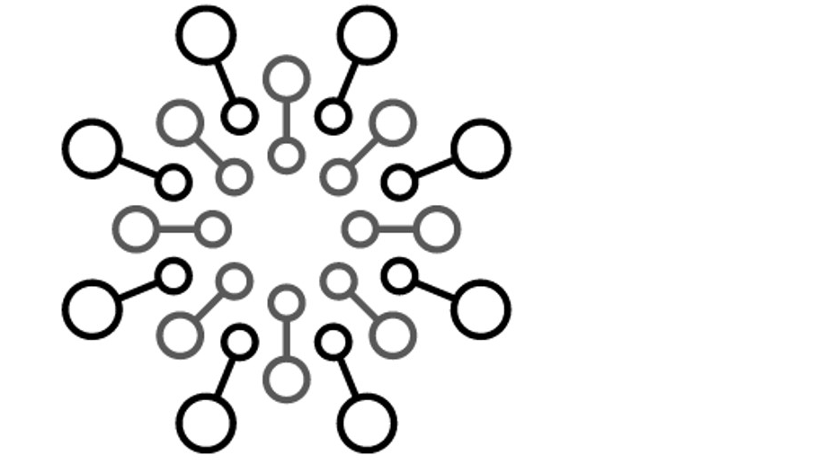

Data Science Toolkit
Open-source, curated collection of proven machine learning implementation accelerators, automating commonly repeated development processes. Allowing data science practicioner to focus more time on complex business value.
Repos:
Machine learning
Conversational AI
Knowledge mining
ML Ops
- ML Ops - Configurable CI/CD pipelines, AML pipelines, and compute resources for ML Ops
- ML Ops for Databricks - ML Ops support for Databricks
Computer vision
- Azure Object Detection - Collection of pipelines to start a template object detection project with as little effort as possible
- Object Detection - Uses computer vision for object or defect detection and includes edge deployment capabilities
UI
- Vitastic - Quickly build web-interfaces for object detection, segmentation and classification models
Responsible AI
Users of the toolkit should ensure that they review the RAI practices and use the above assets/toolkits in a responsible way.
Information can be found here